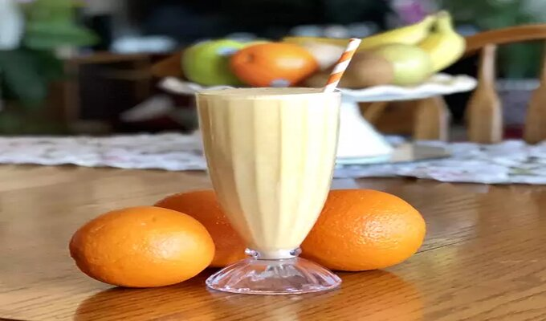

Orange Creamsicle® Shake

Packed with protein, this shake is reminiscent of the famous ice cream bar. Tasty, healthy, and sure to keep you full until lunch or beyond
Ingredients:
- 1 orange, zested and peeled
- 1 cup soy milk
- 1 (5.3 ounce) container plain Greek yogurt
- 1 scoop vanilla powder
- 5 ice cubes
- 1 teaspoon vanilla extract
Steps:
- Combine orange segments, zest, soy milk, yogurt, vanilla powder, ice, and vanilla extract in a blender. Blend until smooth.